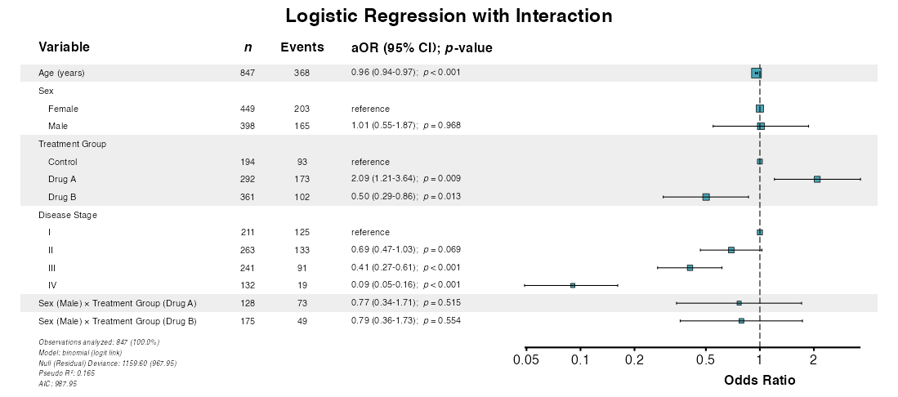
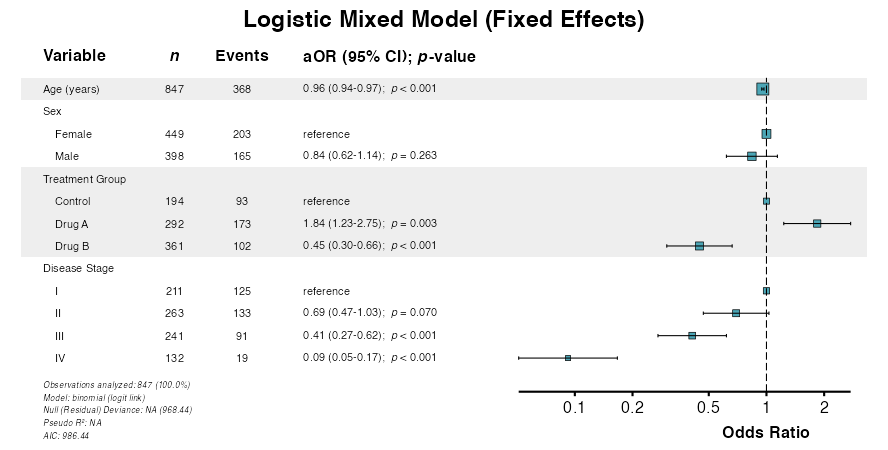
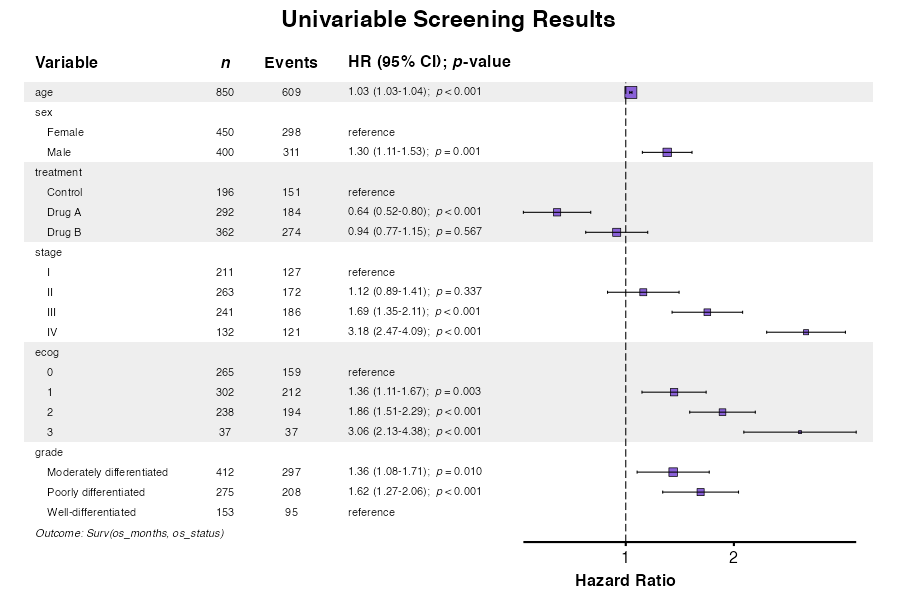
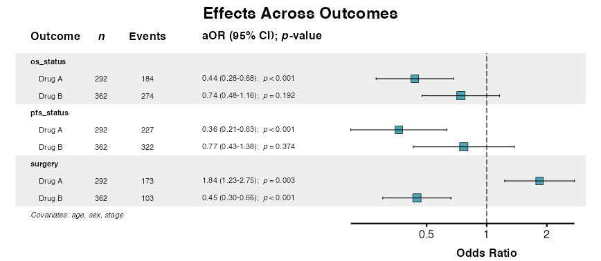

Standard regression analysis assumes independent observations and constant effects across subgroups. In practice, these assumptions often fail: observations may be clustered (e.g., subjects within study sites), effects may vary by subgroup (interaction), or the baseline hazard may differ across strata. This vignette demonstrates advanced analytical techniques to address these complexities.
For mathematical details on the methods covered here, see the Statistical Foundations article.
Preliminaries
The examples in this vignette use the clintrial dataset
included with summata:
library(summata)
library(survival)
library(ggplot2)
data(clintrial)
data(clintrial_labels)
# Examine the clustering structure
table(clintrial$site)
##>
##> Site Alpha Site Beta Site Gamma Site Delta Site Epsilon Site Zeta Site Eta Site Theta Site Iota Site Kappa
##> 76 80 72 89 86 93 89 75 102 88The clintrial dataset includes 10 study sites, providing
a natural clustering variable for hierarchical analysis.
Interaction Effects
Interaction analysis tests whether the association between a
predictor and outcome varies across levels of another variable.
Interactions are specified using colon notation in the
interactions parameter; main effects are automatically
included alongside the interaction term.
Example 1: Two-Way Interaction
Specify interactions using colon notation in the
interactions parameter:
example1 <- fit(
data = clintrial,
outcome = "surgery",
predictors = c("age", "sex", "treatment", "stage"),
interactions = c("sex:treatment"),
model_type = "glm",
labels = clintrial_labels
)
example1
##>
##> Multivariable Logistic Model
##> Formula: surgery ~ age + sex + treatment + stage + sex:treatment
##> n = 847, Events = 368
##>
##> Variable Group n Events aOR (95% CI) p-value
##> <char> <char> <char> <char> <char> <char>
##> 1: Age (years) - 847 368 0.96 (0.94-0.97) < 0.001
##> 2: Sex Female 449 203 reference -
##> 3: Male 398 165 1.01 (0.55-1.87) 0.968
##> 4: Treatment Group Control 194 93 reference -
##> 5: Drug A 292 173 2.09 (1.20-3.62) 0.009
##> 6: Drug B 361 102 0.50 (0.29-0.87) 0.013
##> 7: Disease Stage I 211 125 reference -
##> 8: II 263 133 0.69 (0.47-1.03) 0.069
##> 9: III 241 91 0.41 (0.27-0.62) < 0.001
##> 10: IV 132 19 0.09 (0.05-0.16) < 0.001
##> 11: Sex (Male) × Treatment Group (Drug A) - 128 73 0.77 (0.34-1.71) 0.515
##> 12: Sex (Male) × Treatment Group (Drug B) - 175 49 0.79 (0.36-1.73) 0.554Example 2: Multiple Interactions
Test multiple effect modifiers simultaneously:
example2 <- fit(
data = clintrial,
outcome = "Surv(os_months, os_status)",
predictors = c("age", "sex", "treatment", "stage"),
interactions = c("sex:treatment", "stage:treatment"),
model_type = "coxph",
labels = clintrial_labels
)
example2
##>
##> Multivariable Cox PH Model
##> Formula: Surv(os_months, os_status) ~ age + sex + treatment + stage + sex:treatment + stage:treatment
##> n = 847, Events = 606
##>
##> Variable Group n Events aHR (95% CI) p-value
##> <char> <char> <char> <char> <char> <char>
##> 1: Age (years) - 847 606 1.04 (1.03-1.04) < 0.001
##> 2: Sex Female 450 298 reference -
##> 3: Male 400 311 1.32 (0.95-1.83) 0.094
##> 4: Treatment Group Control 196 151 reference -
##> 5: Drug A 292 184 0.70 (0.43-1.14) 0.153
##> 6: Drug B 362 274 0.67 (0.41-1.09) 0.106
##> 7: Disease Stage I 211 127 reference -
##> 8: II 263 172 1.11 (0.73-1.70) 0.624
##> 9: III 241 186 1.94 (1.21-3.09) 0.006
##> 10: IV 132 121 3.69 (2.28-5.97) < 0.001
##> 11: Sex (Male) × Treatment Group (Drug A) - 128 89 1.11 (0.72-1.72) 0.637
##> 12: Sex (Male) × Treatment Group (Drug B) - 176 143 0.98 (0.65-1.46) 0.903
##> 13: Treatment Group (Drug A) × Disease Stage (II) - 93 52 0.75 (0.42-1.35) 0.339
##> 14: Treatment Group (Drug A) × Disease Stage (III) - 75 50 0.65 (0.35-1.20) 0.171
##> 15: Treatment Group (Drug A) × Disease Stage (IV) - 46 37 0.70 (0.37-1.34) 0.287
##> 16: Treatment Group (Drug B) × Disease Stage (II) - 105 73 1.37 (0.78-2.42) 0.278
##> 17: Treatment Group (Drug B) × Disease Stage (III) - 127 103 1.30 (0.72-2.35) 0.375
##> 18: Treatment Group (Drug B) × Disease Stage (IV) - 55 54 1.24 (0.66-2.31) 0.504Example 3: Continuous × Categorical Interaction
Test whether effects of a continuous variable vary by group:
example3 <- fit(
data = clintrial,
outcome = "los_days",
predictors = c("age", "sex", "treatment", "stage", "surgery"),
interactions = c("age:treatment"),
model_type = "lm",
labels = clintrial_labels
)
example3
##>
##> Multivariable Linear Model
##> Formula: los_days ~ age + sex + treatment + stage + surgery + age:treatment
##> n = 827
##>
##> Variable Group n Adj. Coefficient (95% CI) p-value
##> <char> <char> <char> <char> <char>
##> 1: Age (years) - 827 0.14 (0.09 to 0.19) < 0.001
##> 2: Sex Female 441 reference -
##> 3: Male 386 0.99 (0.46 to 1.52) < 0.001
##> 4: Treatment Group Control 190 reference -
##> 5: Drug A 288 -2.39 (-6.00 to 1.23) 0.197
##> 6: Drug B 349 0.03 (-3.51 to 3.58) 0.985
##> 7: Disease Stage I 207 reference -
##> 8: II 259 1.33 (0.62 to 2.04) < 0.001
##> 9: III 235 3.10 (2.36 to 3.84) < 0.001
##> 10: IV 126 4.32 (3.42 to 5.22) < 0.001
##> 11: Surgical Resection No 459 reference -
##> 12: Yes 368 3.29 (2.69 to 3.88) < 0.001
##> 13: Age (years) × Treatment Group (Drug A) - 288 0.02 (-0.04 to 0.08) 0.557
##> 14: Age (years) × Treatment Group (Drug B) - 349 0.05 (-0.01 to 0.11) 0.114Example 4: Interaction in fullfit()
Include interaction terms in combined univariable/multivariable analysis:
example4 <- fullfit(
data = clintrial,
outcome = "surgery",
predictors = c("age", "sex", "treatment", "stage", "sex:treatment"),
model_type = "glm",
method = "all",
labels = clintrial_labels
)
example4
##>
##> Fullfit Analysis Results
##> Outcome: surgery
##> Model Type: glm
##> Method: all
##> Predictors Screened: 5
##> Multivariable Predictors: 5
##>
##> Variable Group n Events OR (95% CI) Uni p aOR (95% CI) Multi p
##> <char> <char> <char> <char> <char> <char> <char> <char>
##> 1: Age (years) - 850 370 0.96 (0.95-0.98) < 0.001 0.96 (0.94-0.97) < 0.001
##> 2: Sex Female 450 204 reference - reference -
##> 3: Male 400 166 0.86 (0.65-1.12) 0.261 1.01 (0.55-1.87) 0.968
##> 4: Treatment Group Control 196 94 reference - reference -
##> 5: Drug A 292 173 1.58 (1.10-2.27) 0.014 2.09 (1.20-3.62) 0.009
##> 6: Drug B 362 103 0.43 (0.30-0.62) < 0.001 0.50 (0.29-0.87) 0.013
##> 7: Disease Stage I 211 125 reference - reference -
##> 8: II 263 133 0.70 (0.49-1.01) 0.060 0.69 (0.47-1.03) 0.069
##> 9: III 241 91 0.42 (0.29-0.61) < 0.001 0.41 (0.27-0.62) < 0.001
##> 10: IV 132 19 0.12 (0.07-0.20) < 0.001 0.09 (0.05-0.16) < 0.001
##> 11: Sex (Female) × Treatment Group (Control) - 100 51 2.62 (1.57-4.37) < 0.001 - -
##> 12: Sex (Male) × Treatment Group (Control) - 96 43 2.04 (1.22-3.43) 0.007 - -
##> 13: Sex (Female) × Treatment Group (Drug A) - 164 100 3.94 (2.50-6.20) < 0.001 - -
##> 14: Sex (Male) × Treatment Group (Drug A) - 128 73 3.34 (2.07-5.40) < 0.001 0.77 (0.34-1.71) 0.515
##> 15: Sex (Female) × Treatment Group (Drug B) - 186 53 1.00 (0.64-1.59) 0.986 - -Example 5: Testing Interaction Significance
Use compfit() to formally evaluate whether interactions
improve model fit (see Model
Comparison):
example5 <- compfit(
data = clintrial,
outcome = "surgery",
model_list = list(
"Main Effects" = c("age", "sex", "treatment", "stage"),
"Sex × Treatment" = c("age", "sex", "treatment", "stage"),
"Stage × Treatment" = c("age", "sex", "treatment", "stage"),
"Both Interactions" = c("age", "sex", "treatment", "stage")
),
interactions_list = list(
NULL,
c("sex:treatment"),
c("stage:treatment"),
c("sex:treatment", "stage:treatment")
),
model_type = "glm",
labels = clintrial_labels
)
example5
##>
##> Model Comparison Results
##> Outcome: surgery
##> Model Type: glm
##>
##> CMS Weights:
##> Convergence: 15%
##> AIC: 25%
##> Concordance: 40%
##> Pseudo-R²: 15%
##> Brier score: 5%
##>
##> Recommended Model: Main Effects (CMS: 75.4)
##>
##> Models ranked by selection score:
##> Model CMS N Events Predictors Converged AIC BIC Pseudo-R² Concordance Brier Score Global p
##> <char> <num> <int> <num> <int> <char> <num> <num> <num> <num> <num> <char>
##> 1: Main Effects 75.4 847 368 4 Yes 984.4 1022.4 0.165 0.765 0.195 < 0.001
##> 2: Sex × Treatment 68.6 847 368 4 Yes 987.9 1035.4 0.165 0.765 0.195 < 0.001
##> 3: Stage × Treatment 57.2 847 368 4 Yes 993.8 1060.1 0.167 0.766 0.194 < 0.001
##> 4: Both Interactions 50.6 847 368 4 Yes 997.2 1073.1 0.168 0.766 0.194 < 0.001
##>
##> CMS interpretation: 85+ Excellent, 75-84 Very Good, 65-74 Good, 55-64 Fair, < 55 PoorExample 6: Forest Plot with Interactions
Visualize models including interaction terms:
interaction_model <- fit(
data = clintrial,
outcome = "surgery",
predictors = c("age", "sex", "treatment", "stage"),
interactions = c("sex:treatment"),
model_type = "glm",
labels = clintrial_labels
)
example6 <- glmforest(
x = attr(interaction_model, "model"),
title = "Logistic Regression with Interaction",
labels = clintrial_labels,
indent_groups = TRUE,
zebra_stripes = TRUE
)
Mixed-Effects Models
Mixed-effects models (multilevel or hierarchical models) account for
correlation within clusters by incorporating random effects. The
summata package supports linear mixed models
(lmer), generalized linear mixed models
(glmer), and Cox mixed models (coxme).
Random effects are specified using pipe notation within either the
predictors parameter or in a separate random
parameter:
| Syntax | Meaning |
|---|---|
(1\|group) |
Random intercepts by group |
(x\|group) |
Random intercepts and slopes for x |
(1\|g1) + (1\|g2) |
Crossed random effects |
Example 7: Random Intercepts (Linear Mixed)
The (1|site) syntax specifies a random intercept for
each site:
example7 <- fit(
data = clintrial,
outcome = "los_days",
predictors = c("age", "sex", "treatment", "stage", "(1|site)"),
model_type = "lmer",
labels = clintrial_labels
)
example7
##>
##> Multivariable Linear Mixed Model
##> Formula: los_days ~ age + sex + treatment + stage + (1|site)
##> n = 827
##>
##> Variable Group n Adj. Coefficient (95% CI) p-value
##> <char> <char> <char> <char> <char>
##> 1: Age (years) - 827 0.14 (0.11 to 0.16) < 0.001
##> 2: Sex Female 441 reference -
##> 3: Male 386 0.82 (0.28 to 1.37) 0.003
##> 4: Treatment Group Control 190 reference -
##> 5: Drug A 288 -0.94 (-1.68 to -0.20) 0.013
##> 6: Drug B 349 2.41 (1.70 to 3.13) < 0.001
##> 7: Disease Stage I 207 reference -
##> 8: II 259 1.25 (0.51 to 1.98) < 0.001
##> 9: III 235 2.43 (1.67 to 3.19) < 0.001
##> 10: IV 126 2.96 (2.07 to 3.85) < 0.001Example 8: Random Intercepts (Logistic Mixed)
For binary outcomes with clustering (note the use of an independent
random parameter):
example8 <- fit(
data = clintrial,
outcome = "surgery",
predictors = c("age", "sex", "treatment", "stage"),
random = "(1|site)",
model_type = "glmer",
labels = clintrial_labels
)
example8
##>
##> Multivariable glmerMod Model
##> Formula: surgery ~ age + sex + treatment + stage + (1|site)
##> n = 847, Events = 368
##>
##> Variable Group n Events aOR (95% CI) p-value
##> <char> <char> <char> <char> <char> <char>
##> 1: Age (years) - 847 368 0.96 (0.94-0.97) < 0.001
##> 2: Sex Female 449 203 reference -
##> 3: Male 398 165 0.84 (0.62-1.14) 0.263
##> 4: Treatment Group Control 194 93 reference -
##> 5: Drug A 292 173 1.84 (1.23-2.75) 0.003
##> 6: Drug B 361 102 0.45 (0.30-0.66) < 0.001
##> 7: Disease Stage I 211 125 reference -
##> 8: II 263 133 0.69 (0.47-1.03) 0.070
##> 9: III 241 91 0.41 (0.27-0.62) < 0.001
##> 10: IV 132 19 0.09 (0.05-0.17) < 0.001Example 9: Random Slopes
Allow effects to vary by cluster:
example9 <- fit(
data = clintrial,
outcome = "los_days",
predictors = c("age", "sex", "treatment", "stage", "(1 + treatment|site)"),
model_type = "lmer",
labels = clintrial_labels
)
example9
##>
##> Multivariable Linear Mixed Model
##> Formula: los_days ~ age + sex + treatment + stage + (1 + treatment|site)
##> n = 827
##>
##> Variable Group n Adj. Coefficient (95% CI) p-value
##> <char> <char> <char> <char> <char>
##> 1: Age (years) - 827 0.14 (0.11 to 0.16) < 0.001
##> 2: Sex Female 441 reference -
##> 3: Male 386 0.83 (0.28 to 1.38) 0.003
##> 4: Treatment Group Control 190 reference -
##> 5: Drug A 288 -0.95 (-1.81 to -0.09) 0.031
##> 6: Drug B 349 2.40 (1.65 to 3.16) < 0.001
##> 7: Disease Stage I 207 reference -
##> 8: II 259 1.27 (0.53 to 2.00) < 0.001
##> 9: III 235 2.44 (1.68 to 3.20) < 0.001
##> 10: IV 126 3.01 (2.12 to 3.90) < 0.001Example 10: Cox Mixed-Effects Model
For survival outcomes with clustering:
example10 <- fit(
data = clintrial,
outcome = "Surv(os_months, os_status)",
predictors = c("age", "sex", "treatment", "stage", "(1|site)"),
model_type = "coxme",
labels = clintrial_labels
)
example10
##>
##> Multivariable Mixed Effects Cox Model
##> Formula: Surv(os_months, os_status) ~ age + sex + treatment + stage + (1|site)
##> n = 847, Events = 606
##>
##> Variable Group n Events aHR (95% CI) p-value
##> <char> <char> <char> <char> <char> <char>
##> 1: Age (years) - 847 606 1.04 (1.03-1.05) < 0.001
##> 2: Sex Female 450 298 reference -
##> 3: Male 400 311 1.36 (1.16-1.60) < 0.001
##> 4: Treatment Group Control 196 151 reference -
##> 5: Drug A 292 184 0.57 (0.46-0.72) < 0.001
##> 6: Drug B 362 274 0.93 (0.76-1.14) 0.492
##> 7: Disease Stage I 211 127 reference -
##> 8: II 263 172 1.17 (0.93-1.48) 0.178
##> 9: III 241 186 2.04 (1.62-2.58) < 0.001
##> 10: IV 132 121 4.09 (3.16-5.30) < 0.001Example 11: Forest Plot from Mixed Model
Visualize fixed effects from mixed-effects models:
example11 <- glmforest(
x = attr(example8, "model"),
title = "Logistic Mixed Model (Fixed Effects)",
labels = clintrial_labels,
indent_groups = TRUE,
zebra_stripes = TRUE
)
Example 12: Comparing Random-Effects Specifications
Use compfit() to compare different random-effects
structures (see Model
Comparison):
example12 <- compfit(
data = clintrial,
outcome = "los_days",
model_list = list(
"Random Intercepts" = c("age", "sex", "treatment", "stage", "(1|site)"),
"Random Slopes" = c("age", "sex", "treatment", "stage", "(1 + treatment|site)")
),
model_type = "lmer",
labels = clintrial_labels
)
example12
##>
##> Model Comparison Results
##> Outcome: los_days
##> Model Type: lmer
##>
##> CMS Weights:
##> Convergence: 20%
##> AIC: 25%
##> Marginal R²: 25%
##> Conditional R²: 15%
##> ICC: 15%
##>
##> Recommended Model: Random Intercepts (CMS: 74)
##>
##> Models ranked by selection score:
##> Model CMS N Events Predictors Groups Converged AIC BIC Pseudo-R² Marginal R² Conditional R² ICC Concordance Global p
##> <char> <num> <int> <num> <int> <int> <char> <num> <num> <num> <num> <num> <num> <num> <char>
##> 1: Random Intercepts 74.0 827 NA 5 10 Yes 4679.8 4727.0 0.275 0.275 0.330 0.076 NA < 0.001
##> 2: Random Slopes 49.1 827 NA 5 10 Yes 4688.5 4759.3 0.276 0.276 0.334 0.098 NA < 0.001
##>
##> CMS interpretation: 85+ Excellent, 75-84 Very Good, 65-74 Good, 55-64 Fair, < 55 PoorStratification and Clustering
In addition to mixed-effects models, Cox models support stratification (separate baseline hazards) and clustered standard errors (robust variance estimation).
| Approach | When to Use |
|---|---|
| Mixed-effects | Model cluster-specific effects; prediction at cluster level |
| Stratification | Proportional hazards assumption violated for a variable |
| Clustered SE | Correlation within clusters; robust inference |
Example 13: Stratified Cox Model
Stratification allows nonproportional hazards across strata without
estimating stratum effects. Use the strata parameter:
example13 <- fit(
data = clintrial,
outcome = "Surv(os_months, os_status)",
predictors = c("age", "sex", "treatment"),
strata = "site",
model_type = "coxph",
labels = clintrial_labels
)
example13
##>
##> Multivariable Cox PH Model
##> Formula: Surv(os_months, os_status) ~ age + sex + treatment + strata( site )
##> n = 850, Events = 609
##>
##> Variable Group n Events aHR (95% CI) p-value
##> <char> <char> <char> <char> <char> <char>
##> 1: Age (years) - 850 609 1.04 (1.03-1.04) < 0.001
##> 2: Sex Female 450 298 reference -
##> 3: Male 400 311 1.28 (1.09-1.50) 0.003
##> 4: Treatment Group Control 196 151 reference -
##> 5: Drug A 292 184 0.62 (0.50-0.77) < 0.001
##> 6: Drug B 362 274 1.00 (0.81-1.22) 0.976Example 14: Cluster-Robust SEs
For robust inference with correlated observations, cluster-robust
standard errors account for within-cluster correlation. Use the
cluster parameter:
example14 <- fit(
data = clintrial,
outcome = "Surv(os_months, os_status)",
predictors = c("age", "sex", "treatment", "stage"),
cluster = "site",
model_type = "coxph",
labels = clintrial_labels
)
example14
##>
##> Multivariable Cox PH Model
##> Formula: Surv(os_months, os_status) ~ age + sex + treatment + stage
##> n = 847, Events = 606
##>
##> Variable Group n Events aHR (95% CI) p-value
##> <char> <char> <char> <char> <char> <char>
##> 1: Age (years) - 847 606 1.04 (1.03-1.04) < 0.001
##> 2: Sex Female 450 298 reference -
##> 3: Male 400 311 1.33 (1.19-1.48) < 0.001
##> 4: Treatment Group Control 196 151 reference -
##> 5: Drug A 292 184 0.56 (0.40-0.78) < 0.001
##> 6: Drug B 362 274 0.83 (0.63-1.08) 0.167
##> 7: Disease Stage I 211 127 reference -
##> 8: II 263 172 1.16 (0.93-1.44) 0.189
##> 9: III 241 186 1.90 (1.61-2.23) < 0.001
##> 10: IV 132 121 3.57 (2.86-4.46) < 0.001Weighted Regression
For survey data or inverse probability weighting, use the
weights parameter. Weights can account for sampling design,
non-response, or confounding adjustment.
Example 15: Weighted Analysis
# Create example weights
clintrial$analysis_weight <- runif(nrow(clintrial), 0.5, 2.0)
example15 <- fit(
data = clintrial,
outcome = "surgery",
predictors = c("age", "sex", "treatment", "stage"),
weights = "analysis_weight",
model_type = "glm",
labels = clintrial_labels
)
example15
##>
##> Multivariable Logistic Model
##> Formula: surgery ~ age + sex + treatment + stage
##> n = 847, Events = 368
##>
##> Variable Group n Events aOR (95% CI) p-value
##> <char> <char> <char> <char> <char> <char>
##> 1: Age (years) - 847 368 0.96 (0.95-0.98) < 0.001
##> 2: Sex Female 449 203 reference -
##> 3: Male 398 165 0.80 (0.61-1.05) 0.109
##> 4: Treatment Group Control 194 93 reference -
##> 5: Drug A 292 173 1.71 (1.19-2.45) 0.004
##> 6: Drug B 361 102 0.42 (0.29-0.59) < 0.001
##> 7: Disease Stage I 211 125 reference -
##> 8: II 263 133 0.68 (0.48-0.96) 0.028
##> 9: III 241 91 0.40 (0.28-0.58) < 0.001
##> 10: IV 132 19 0.08 (0.04-0.13) < 0.001Advanced Univariable Screening Features
The uniscreen() function supports advanced model
specifications including random effects and stratification.
Example 16: Univariable Screening with Random Effects
Screen multiple predictors while accounting for clustering:
example16 <- uniscreen(
data = clintrial,
outcome = "surgery",
predictors = c("age", "sex", "treatment", "stage"),
model_type = "glmer",
random = "(1|site)",
labels = clintrial_labels
)
example16
##>
##> Univariable Screening Results
##> Outcome: surgery
##> Model Type: glmerMod
##> Predictors Screened: 4
##> Significant (p < 0.05): 3
##>
##> Variable Group n Events OR (95% CI) p-value
##> <char> <char> <char> <char> <char> <char>
##> 1: Age (years) - 850 370 0.96 (0.95-0.98) < 0.001
##> 2: Sex Female 450 204 reference -
##> 3: Male 400 166 0.85 (0.65-1.12) 0.256
##> 4: Treatment Group Control 196 94 reference -
##> 5: Drug A 292 173 1.57 (1.09-2.27) 0.016
##> 6: Drug B 362 103 0.43 (0.30-0.62) < 0.001
##> 7: Disease Stage I 211 125 reference -
##> 8: II 263 133 0.72 (0.50-1.04) 0.080
##> 9: III 241 91 0.42 (0.29-0.61) < 0.001
##> 10: IV 132 19 0.12 (0.07-0.20) < 0.001Example 17: Cox Screening with Mixed Effects
For survival outcomes with clustering:
example17 <- uniscreen(
data = clintrial,
outcome = "Surv(os_months, os_status)",
predictors = c("age", "sex", "treatment", "stage", "ecog"),
model_type = "coxme",
random = "(1|site)",
labels = clintrial_labels
)
example17
##>
##> Univariable Screening Results
##> Outcome: Surv(os_months, os_status)
##> Model Type: Mixed Effects Cox
##> Predictors Screened: 5
##> Significant (p < 0.05): 5
##>
##> Variable Group n Events HR (95% CI) p-value
##> <char> <char> <char> <char> <char> <char>
##> 1: Age (years) - 850 609 1.04 (1.03-1.04) < 0.001
##> 2: Sex Female 450 298 reference -
##> 3: Male 400 311 1.30 (1.11-1.53) 0.001
##> 4: Treatment Group Control 196 151 reference -
##> 5: Drug A 292 184 0.65 (0.53-0.81) < 0.001
##> 6: Drug B 362 274 1.04 (0.85-1.27) 0.735
##> 7: Disease Stage I 211 127 reference -
##> 8: II 263 172 1.13 (0.90-1.42) 0.307
##> 9: III 241 186 1.78 (1.41-2.23) < 0.001
##> 10: IV 132 121 3.63 (2.81-4.69) < 0.001
##> 11: ECOG Performance Status 0 265 159 reference -
##> 12: 1 302 212 1.31 (1.07-1.62) 0.010
##> 13: 2 238 194 1.92 (1.56-2.37) < 0.001
##> 14: 3 37 37 2.95 (2.05-4.24) < 0.001Example 18: Forest Plot from Univariable Screening
The uniforest() function visualizes univariable
screening results:
uni_results <- uniscreen(
data = clintrial,
outcome = "Surv(os_months, os_status)",
predictors = c("age", "sex", "treatment", "stage", "ecog", "grade"),
model_type = "coxph",
labels = clintrial_labels
)
example18 <- uniforest(
uni_results,
title = "Univariable Screening Results",
indent_groups = TRUE,
zebra_stripes = TRUE
)
Advanced Multivariate Regression Features
The multifit() function supports interactions and
mixed-effects models when testing a predictor across multiple
outcomes.
Example 19: Multi-Outcome with Interactions
Test effect modification across multiple outcomes:
example19 <- multifit(
data = clintrial,
outcomes = c("surgery", "pfs_status", "os_status"),
predictor = "treatment",
covariates = c("age", "sex", "stage"),
interactions = c("treatment:sex"),
labels = clintrial_labels,
parallel = FALSE
)
example19
##>
##> Multivariate Analysis Results
##> Predictor: treatment
##> Outcomes: 3
##> Model Type: glm
##> Covariates: age, sex, stage
##> Interactions: treatment:sex
##> Display: adjusted
##>
##> Outcome Predictor n Events aOR (95% CI) p-value
##> <char> <char> <char> <char> <char> <char>
##> 1: Surgical Resection Treatment Group (Drug A) 292 173 2.09 (1.20-3.62) 0.009
##> 2: Surgical Resection Treatment Group (Drug B) 361 102 0.50 (0.29-0.87) 0.013
##> 3: Surgical Resection Treatment Group (Drug A) × Sex (Male) - - 0.77 (0.34-1.71) 0.515
##> 4: Surgical Resection Treatment Group (Drug B) × Sex (Male) - - 0.79 (0.36-1.73) 0.554
##> 5: Progression or Death Event Treatment Group (Drug A) 292 227 0.41 (0.20-0.84) 0.015
##> 6: Progression or Death Event Treatment Group (Drug B) 361 321 0.95 (0.43-2.09) 0.893
##> 7: Progression or Death Event Treatment Group (Drug A) × Sex (Male) - - 0.75 (0.24-2.32) 0.618
##> 8: Progression or Death Event Treatment Group (Drug B) × Sex (Male) - - 0.63 (0.20-2.06) 0.448
##> 9: Death Event Treatment Group (Drug A) 292 184 0.39 (0.22-0.70) 0.002
##> 10: Death Event Treatment Group (Drug B) 361 273 0.61 (0.34-1.10) 0.099
##> 11: Death Event Treatment Group (Drug A) × Sex (Male) - - 1.29 (0.53-3.18) 0.575
##> 12: Death Event Treatment Group (Drug B) × Sex (Male) - - 1.59 (0.65-3.91) 0.308Example 20: Multi-Outcome with Mixed Effects
Account for clustering when testing effects across outcomes:
example20 <- multifit(
data = clintrial,
outcomes = c("surgery", "pfs_status"),
predictor = "treatment",
covariates = c("age", "sex"),
random = "(1|site)",
model_type = "glmer",
labels = clintrial_labels,
parallel = FALSE
)
example20
##>
##> Multivariate Analysis Results
##> Predictor: treatment
##> Outcomes: 2
##> Model Type: glmer
##> Covariates: age, sex
##> Random Effects: (1|site)
##> Display: adjusted
##>
##> Outcome Predictor n Events aOR (95% CI) p-value
##> <char> <char> <char> <char> <char> <char>
##> 1: Surgical Resection Treatment Group (Drug A) 292 173 1.64 (1.13-2.40) 0.010
##> 2: Surgical Resection Treatment Group (Drug B) 362 103 0.44 (0.30-0.63) < 0.001
##> 3: Progression or Death Event Treatment Group (Drug A) 292 227 0.41 (0.24-0.71) 0.001
##> 4: Progression or Death Event Treatment Group (Drug B) 362 322 1.01 (0.58-1.78) 0.971Example 21: Survival Multi-Outcome with Mixed Effects
For multiple survival outcomes with clustering:
example21 <- multifit(
data = clintrial,
outcomes = c("Surv(pfs_months, pfs_status)",
"Surv(os_months, os_status)"),
predictor = "treatment",
covariates = c("age", "sex"),
random = "(1|site)",
model_type = "coxme",
labels = clintrial_labels,
parallel = FALSE
)
example21
##>
##> Multivariate Analysis Results
##> Predictor: treatment
##> Outcomes: 2
##> Model Type: coxme
##> Covariates: age, sex
##> Random Effects: (1|site)
##> Display: adjusted
##>
##> Outcome Predictor n Events aHR (95% CI) p-value
##> <char> <char> <char> <char> <char> <char>
##> 1: Progression-Free Survival (months) Treatment Group (Drug A) 723 723 0.63 (0.51-0.77) < 0.001
##> 2: Progression-Free Survival (months) Treatment Group (Drug B) 723 723 1.00 (0.83-1.20) 0.989
##> 3: Overall Survival (months) Treatment Group (Drug A) 609 609 0.63 (0.50-0.78) < 0.001
##> 4: Overall Survival (months) Treatment Group (Drug B) 609 609 1.00 (0.82-1.23) 0.962Complete Workflow Example
The following demonstrates a complete advanced analysis workflow:
# Step 1: Screen risk factors for primary outcome
risk_screening <- uniscreen(
data = clintrial,
outcome = "os_status",
predictors = c("age", "sex", "bmi", "smoking", "diabetes",
"hypertension", "stage", "ecog", "treatment"),
model_type = "glm",
p_threshold = 0.20,
labels = clintrial_labels
)
risk_screening
##>
##> Univariable Screening Results
##> Outcome: os_status
##> Model Type: Logistic
##> Predictors Screened: 9
##> Significant (p < 0.2): 6
##>
##> Variable Group n Events OR (95% CI) p-value
##> <char> <char> <char> <char> <char> <char>
##> 1: Age (years) - 850 609 1.05 (1.03-1.06) < 0.001
##> 2: Sex Female 450 298 reference -
##> 3: Male 400 311 1.78 (1.31-2.42) < 0.001
##> 4: Body Mass Index (kg/m²) - 838 599 1.01 (0.98-1.05) 0.347
##> 5: Smoking Status Never 337 248 reference -
##> 6: Former 311 203 0.67 (0.48-0.94) 0.022
##> 7: Current 185 143 1.22 (0.80-1.86) 0.351
##> 8: Diabetes No 637 457 reference -
##> 9: Yes 197 138 0.92 (0.65-1.31) 0.646
##> 10: Hypertension No 504 354 reference -
##> 11: Yes 331 242 1.15 (0.85-1.57) 0.369
##> 12: Disease Stage I 211 127 reference -
##> 13: II 263 172 1.25 (0.86-1.82) 0.243
##> 14: III 241 186 2.24 (1.49-3.36) < 0.001
##> 15: IV 132 121 7.28 (3.70-14.30) < 0.001
##> 16: ECOG Performance Status 0 265 159 reference -
##> 17: 1 302 212 1.57 (1.11-2.22) 0.011
##> 18: 2 238 194 2.94 (1.95-4.43) < 0.001
##> 19: 3 37 37 10434240.53 (0.00-Inf) 0.967
##> 20: Treatment Group Control 196 151 reference -
##> 21: Drug A 292 184 0.51 (0.34-0.76) 0.001
##> 22: Drug B 362 274 0.93 (0.62-1.40) 0.721
##> Variable Group n Events OR (95% CI) p-value
##> <char> <char> <char> <char> <char> <char>
# Step 2: Test key exposure across multiple outcomes
effects <- multifit(
data = clintrial,
outcomes = c("surgery", "pfs_status", "os_status"),
predictor = "treatment",
covariates = c("age", "sex", "stage"),
columns = "both",
labels = clintrial_labels,
parallel = FALSE
)
effects
##>
##> Multivariate Analysis Results
##> Predictor: treatment
##> Outcomes: 3
##> Model Type: glm
##> Covariates: age, sex, stage
##> Display: both
##>
##> Outcome Predictor n Events OR (95% CI) Uni p aOR (95% CI) Multi p
##> <char> <char> <char> <char> <char> <char> <char> <char>
##> 1: Death Event Treatment Group (Drug A) 292 184 0.51 (0.34-0.76) 0.001 0.44 (0.28-0.68) < 0.001
##> 2: Death Event Treatment Group (Drug B) 362 274 0.93 (0.62-1.40) 0.721 0.74 (0.48-1.16) 0.192
##> 3: Progression or Death Event Treatment Group (Drug A) 292 227 0.44 (0.26-0.74) 0.002 0.36 (0.21-0.63) < 0.001
##> 4: Progression or Death Event Treatment Group (Drug B) 362 322 1.02 (0.59-1.77) 0.950 0.77 (0.43-1.38) 0.374
##> 5: Surgical Resection Treatment Group (Drug A) 292 173 1.58 (1.10-2.27) 0.014 1.84 (1.23-2.75) 0.003
##> 6: Surgical Resection Treatment Group (Drug B) 362 103 0.43 (0.30-0.62) < 0.001 0.45 (0.30-0.66) < 0.001
# Step 3: Visualize effects
forest_plot <- multiforest(
effects,
title = "Effects Across Outcomes",
indent_predictor = TRUE,
zebra_stripes = TRUE
)
Best Practices
Interaction Analysis
- Include main effects for all variables in interactions
- Test formally using interaction p-values
- Non-significant interactions do not prove effect homogeneity
- Consider domain plausibility when interpreting
Mixed-Effects Models
- Use when data exhibits natural clustering
- Start with random intercepts; add random slopes if justified
- Monitor convergence; simplify if necessary
- Compare to fixed-effects models using
compfit()
Common Issues
Convergence Problems in Mixed Models
Simplify the random effects structure if convergence fails:
# Start with random intercepts only
fit(data, outcome, c(predictors, "(1|site)"), model_type = "lmer")Check for common problems such as few observations per cluster, near-zero variance in random effects, or highly correlated predictors.
Further Reading
- Statistical Foundations: Mathematical details for all model types
-
Descriptive Tables:
desctable()for baseline characteristics -
Regression Modeling:
fit(),uniscreen(), andfullfit() -
Model Comparison:
compfit()for comparing models - Table Export: Export to PDF, Word, and other formats
- Forest Plots: Visualization of regression results
-
Multivariate Regression:
multifit()for multi-outcome analysis